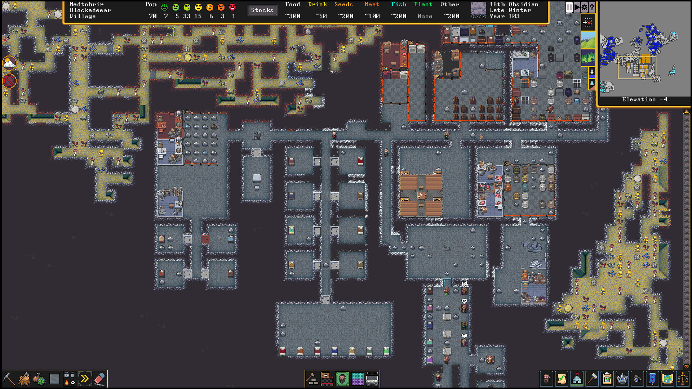

Главная | Страница 1 | Страница 2 | Страница 3 | Страница 4
Первым шагом в Dwarf Fortress является генерация мира; за раз в одном сгенерированном мире можно вести только одну игру. Игрок может задать ряд параметров, в том числе размер мира; его враждебность, то есть количество диких областей с опасными врагами; богатство полезными ископаемыми и продолжительность истории до начала игры. Чем длиннее заданная история в годах, тем больше объектов и информации из прошлого — мифов, легенд, руин — встретит игрок. Различные символы на карте обозначают генерируемые дороги, холмы, города различных цивилизаций, и они меняются по мере процесса генерации, показывая, как эволюционирует создаваемый мир. Для строительства поселения игрок должен выбрать в мире какое-либо определённое место, куда отправится экспедиция из семи дварфов; при этом необходимо принимать во внимание множество соображений — рельеф местности, климат, наличие тех или иных видов почвы, полезных ископаемых и тому подобного, и разные условия могут заметно осложнить или облегчить жизнь поселения. Игрок может настроить состав экспедиции, в том числе выбрав для дварфов-поселенцев различные навыки, снабдив их припасами и домашними животными. У каждого дварфа есть уникальный набор индивидуальных характеристик, вплоть до описания внешности, черт характера, предпочитаемого божества или любимого алкогольного напитка — эти характеристики Dwarf Fortress задаёт каждый раз случайным образом. В ходе игры эти характеристики влияют на поведение дварфов и их отношения друг с другом. В режиме поселения игрок не может управлять дварфами напрямую — чтобы построить и обслуживать крепость, он должен назначать поселенцам задачи, например, отметив область в склоне холма, где нужно вырыть туннель. Поселенцам можно поручать любые задачи, но то, насколько успешно дварф справится с той или иной работой, зависит от уровня навыка, соответствующего работе. Со временем эти навыки растут: например, дварф, которому часто поручают добывать руду, становится всё более и более опытным горняком. Многие навыки связаны с мирными ремёслами — это, например, обработка камня, кузнечное дело или земледелие; но некоторые навыки отвечают и за способность сражаться или вести переговоры. Более широкие группы навыков и соответствующих работ включат узкие и конкретные категории, такие, как кожевенное или гончарное ремесло, навыки мясника или ювелира. Чтобы дварф мог заниматься определённой работой, зачастую необходимо сначала оборудовать для него рабочее место: например, для производства алкоголя нужно построить винокурню. Выплавка металла и кузнечное дело занимают особо важное место в жизни крепости: благодаря им поселенцы обеспечивают себя оружием и доспехами для войны, могут строить ловушки и ценные предметы обстановки.

Живые существа (а также представленная в игре нежить) состоят из отдельных частей тела и внутренних органов, для которых индивидуально рассчитываются повреждения в ходе боя, падения с высоты, попадания под обвал или ожога. Раненым героям требуется не абстрактная «аптечка», как это принято в большинстве игр, а промывание раны, наложение швов и, в случае перелома, фиксация повреждённой конечности. Слои горных пород образованы десятками различных минералов, причём соблюдается определённый порядок: сверху может быть почва, под ней глина, ещё ниже идут осадочные породы; в некоторых местах обнаруживаются водоносные слои, через которые нельзя прокладывать тоннели без предварительной откачки воды насосами, замораживания или сооружения кессонов. Используя реализованные в игре механизмы (водяное колесо, насосы, затворы и нажимные плиты), можно реализовать машину Тьюринга, калькулятор и упрощённую версию игры Space Invaders. В игре присутствует несколько десятков видов растений, которые можно выращивать на фермах — в том числе и подземных (под землёй, например, растут вымышленные карьерники). Часть растений идёт в пищу, часть требует дополнительной переработки и применяется в текстильном или пивоваренном производстве. Все грибы в Dwarf Fortress являются вымышленными, растут и размножаются под землёй. Наряду с экономической и геологической составляющей игра отличается моделированием психологического климата в подопечном игроку коллективе. Каждый из дварфов имеет собственные черты характера, родственные связи (в версии 34.х игра просчитывает степень родства вплоть до двоюродных братьев, а в 40.хх — ещё дружеские и приятельские отношения) и в случае потери близких или неудовлетворения основных потребностей (отсутствие жилья, плохое питание) возможна депрессия или вспышки агрессии, проявляющиеся либо в вандализме, либо в нападении на соплеменников. В зависимости от характера дварфа, разные вещи вызывают положительные/отрицательные мысли и влияют на его жизнь. Кроме того, иногда дварфы становятся жертвами навязчивой идеи по созданию какой-либо вещи, и в таком случае единственный шанс сохранить их душевное здоровье — дать им всё необходимое для работы. В итоге появляется артефакт — особо ценный случайно генерируемый предмет, способный увеличить стоимость крепости в несколько раз. Как шутят любители игры, в Dwarf Fortress можно потерять крепость, случайно задавив чью-то кошку — впавший в ярость владелец животного начнёт драку, которая может легко перерасти в конфликт между всеми обитателями поселения. Поэтому, в силу сложности игры, принято считать, что новички неизбежно потеряют свою первую крепость.